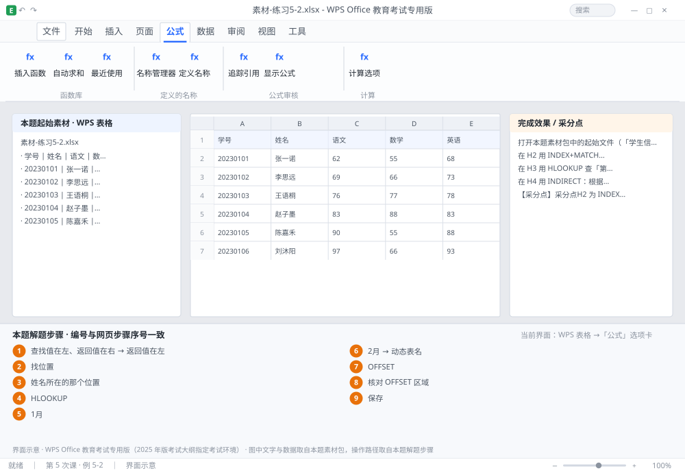

完成比对文档 · 例 5-2
INDEX+MATCH 反向查学号 + HLOOKUP + INDIRECT 动态表名 + OFFSET ｜ 第 5 次课 / WPS 表格 ｜ 网页：实操-表格2.html ｜ 考试环境：WPS Office 教育考试专用版（2025 年版考试大纲指定考试环境）
用途 本页按修订后的题目要求与解题步骤生成，是交卷自查的结果基准：
逐项列出每一步应出现的可复核结果，配合模拟操作截图与解题结果文件使用。
它不是素材包的一部分，不会预置答案动作；起始素材仍从本题素材包下载。
一、本题起始素材包
目录：练习素材/练习5-2-反向查找与动态引用/ ｜
下载包：练习素材/下载/练习5-2-反向查找与动态引用.zip
二、题目要求
- 打开本题素材包中的起始文件（「学生信息」表 A 学号、B 姓名、C 专业；「季度销售」表首行为季度、第 2 行为金额）。
- 在 H2 用 INDEX+MATCH 按 I2 输入的姓名查学号（反向查找，VLOOKUP 做不到）。
- 在 H3 用 HLOOKUP 查「第三季度」的销售额。
- 在 H4 用 INDIRECT：根据 I4 中输入的表名（如「1月」），引用该表的 B2 单元格。
- 在 H5 用 OFFSET 求以 B2 为起点、5 行 3 列区域的总和。
- 保存为 学号-姓名-练习5-2.xlsx。
三、解题步骤（编号与下方核对表、截图编号一致）
- 理解为什么用 INDEX+MATCH。VLOOKUP 只能「查找值在左、返回值在右」；按姓名查学号是「返回值在左」，必须换组合。
- 先写 MATCH。MATCH 的作用是「找位置」：MATCH(I2,学生信息!$B$2:$B$21,0) 返回姓名在 B 列中的第几个（相对位置）。
- 再套 INDEX。H2 输入 =INDEX(学生信息!$A$2:$A$21,MATCH(I2,学生信息!$B$2:$B$21,0)) → Enter。读法：在 A 列里，取「姓名所在的那个位置」的值。
- HLOOKUP。H3 输入 =HLOOKUP("第三季度",$B$1:$E$2,2,0) → Enter。HLOOKUP 与 VLOOKUP 只差一个方向：它在首行横向找，返回指定行号的值。
- INDIRECT。H4 输入 =INDIRECT("'"&I4&"'!B2") → Enter。在 I4 输入「1月」，公式就去取 '1月'!B2。单引号是为了兼容以数字开头或含空格的工作表名。
- 验证 INDIRECT。把 I4 改成「2月」，H4 的值应立即变为 2 月表的 B2——这就是「动态表名」。
- OFFSET。H5 输入 =SUM(OFFSET(B2,0,0,5,3)) → Enter。五个参数：基准点 B2、向下偏移 0 行、向右偏移 0 列、高度 5 行、宽度 3 列。
- 核对 OFFSET 区域。选中公式中的 OFFSET 部分按 F9 可临时看到它引用的区域内容，按 Esc 退出不改变公式。
- 保存。Ctrl+S。
四、完成效果 / 采分点
采分点H2 为 INDEX+MATCH 组合且按姓名查到正确学号 · H3 为 HLOOKUP 且第 3 参数为 2、第 4 参数为 0 · H4 用 INDIRECT 拼接表名（含单引号） · H5 用 OFFSET 构造 5 行 3 列区域并求和
五、逐项完成核对表
| 步骤 | 关键操作路径 | 应出现的结果（可复核） |
|---|
| 1 | 理解为什么用 INDEX+MATCH | 「查找值在左、返回值在右」、「返回值在左」 |
| 2 | 先写 MATCH | 「找位置」、I2 |
| 3 | 再套 INDEX | H2、=INDEX(、I2、「姓名所在的那个位置」 |
| 4 | HLOOKUP | H3、=HLOOKUP( |
| 5 | INDIRECT | H4、=INDIRECT(、I4、B2、「1月」 |
| 6 | 验证 INDIRECT | I4、「2月」、H4、B2、「动态表名」 |
| 7 | OFFSET | H5、=SUM(、B2、0 行、5 行 |
| 8 | 核对 OFFSET 区域 | F9 |
| 9 | 保存 | 保存 |
六、模拟操作截图

界面示意 · WPS Office 教育考试专用版 · 橙色编号与本题解题步骤序号一致；
图中文字与数据取自本题素材包，功能入口取自本题解题步骤。
核对方法：按网页解题步骤完成并另存自己的成稿后，逐行比对本表第 3 列的
参数、公式、区域、文件名与对象数量；再对照网页「完成效果 / 采分点」检查版式是否一致。